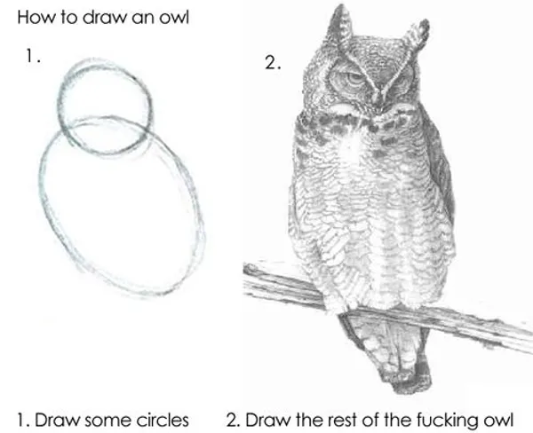
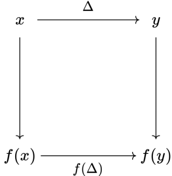

For such an effective way of ferreting out bugs in systems, property-based testing is drastically underused today. I’ve been using property-based testing for almost 10 years now, and in that time I’ve encountered maybe 3 other coworkers who also use property-based testing, even for systems that are ripe for it.
IMO, a big reason for this is that property-based testing has a
“draw-the-owl” problem: most articles begin with fairly artificial
examples (e.g. the oft-used x == encode(decode(x)) example) but then
don’t go much further. I know when I started out, I definitely had
problems figuring out how to actually apply property-based testing to
the systems I was working with, and I’m sure many others have the same
problem.

There are entire research papers whose main contribution is basically “we came up with a clever property to test and discovered bugs in some programs”
For readers, note that this is going to be geared towards those who already know what property based testing is. I’ll give a brief introduction to it for those who are brand-new, but you’ll probably want to look at some other introductory, as well.
What is Property-Based Testing?
Normal unit testing has a bit of a chicken-and-egg problem: the reason why we need test suites is that we are generally pretty bad at finding all the different edge cases and interactions present in a system. But because we’re bad at such things, it’s easy to not test exactly those edge cases that cause problems in production!
Property-based testing is one potential solution to this: the basic idea is to test properties that are true for a large set of test inputs. You then have the computer automatically search through that set to find counterexamples.
The hello world of property-based testing is the “encode/decode” example – let’s say that you are writing your own JSON serializer and deserializer. Then a normal test would look something like:
|
|
But a really naive property-based test would look something like:
|
|
Of course, an actual property-based test system will implement more effective test case generators that explore more of the space. Good ones will also automatically implement “shrinking” for you, where it will automatically minimize a test case that cases test failures1.
Then there are two questions you need to answer:
- What properties are you actually going to test?
- How can you implement high-quality generators / shrinkers?
We’ll be focusing on the first question here. The second question is (IMO) trickier but also less necessary (you can get pretty far with pretty naive generators), so we’ll leave it to a hypothetical “Advanced Property-Based Testing” blog post.
How to actually find good properties?
The most obvious properties are “definitional” properties – these are things where the function definition naturally implies a definition (e.g. a “sort” means that the output should have the same keys as the input but in ascending order). This is good for things where you can reason about a logical specification, but in my POV there are relatively few places where you can do this easily (if it were easy, we could all just use Coq or Lean).
If those don’t exist, I usually turn to 3 rough categories of properties that I usually turn to when writing a test suite:
- Model-Checking / Oracles: this is where you have some other way to tell what correct behavior is that you can use to cross-check the system-under-test.
- Invariants: these are operations and/or parameters that should not have any logical effect on the output of the system
- Metamorphic Testing:this is where you know how to transform your input to get some known transformation of the output.
The boundaries are a little fuzzy, but I’ll give a bunch of examples of each to hopefully make things clearer.
Model-Checking / Test Oracles
A lot of times, you can define an “oracle” that tells you what the right answer “should be”. If you have one, then the property is just whethre your system agrees with that oracle. Some common examples:
- Single-Threaded: For most parallel algorithms, there is an easy and obvious sequential implementation. Do they give you the same results?
- Poor Performance Oracle: Sometimes there is a trivial implementation with bad performance that you don’t want to use in production (e.g. a naive exponential-time algorithm). If you have ways to bound the runtime of your test suite, then these are natural oracles.
- External Oracle: Sometimes, there is a pre-existing implementation that you just can’t use in production for some reason (e.g. the algorithm you want is written in Java but you’re system is in C++).
- Competing Implementations: Sometimes you’re implementing some kind of
standard (e.g. SQL, C) and you can check different implementations
against each other.
- Finding missed optimizations through the lens of dead code elimination is an example of checking the GCC optimizer vs the Clang optimizer, using extern function calls as “markers” to check if some basic block is dead code or not.
- Ground Truth: sometimes you can start with the answer you want and
then generate data from that answer:
- If you’re a concurrent hash map, insert a “special” key into the hash map and check that regardless of what inserts/queries/delets you make for other keys, the value for that key is always the same.
- If you’re writing an algorithm for fitting a generative model, start with the model parameters, generate data from those parameters, and see if your algorithm can recover the original parameters
- Pivoted Query Synthesis: start with a row you want to retrieve and generate a query that is guaranteed to retrieve (at least) that row.
- Simplified Subset: sometimes you can write a trivial oracle for a subset of possible inputs (e.g. one that only handles DAGs instead of general graphs) you can use to check that you at least handle the simpler cases.
- Overfitting: If I give my neural network very little data, can it (1) learn to drive the loss function to 0 and (2) does that actually result in giving accurate performance? This is hard to do in an automated test, but an easy sanity check whenever you’re implementing something new.
Invariants
An invariant is something that you can modify without logical changes to
the output – assert encode(decode(x)) == x is a simple example of this. A
more involved example comes from a real-time streaming framework (a la
MediaPipe) I use at work. Let’s the say I want to implement a Python
computation to plug into this framework – such computations operate
over batches of samples and returns batches of samples (e.g.
fn(input_batch: Sequence[T]) -> Sequence[U]). But we don’t actually
control the batching behavior – things like network lag, the sensor
firmware we’re looking at, and more can all affect how many samples are
delivered at once. This creates a natural invariant for us to enforce:
|
|
should always return the same result.2 Some other examples:
- Output properties: sometimes you know the outputs should always be sorted, or always be within a certain range.
- Change the degree of parallelization in a Map/Reduce computation and check that you get the same results
- Change the heuristics we use in a search algorithm (e.g. biases for depth-first vs breadth-first) and check we have the same results
- For a data structure (e.g. an interval tree), change the order you insert data into the structure and check that you get the same results for queries.
- For a fault-tolerant system, artificially inject some database transaction errors to check that fallback code leaves the system in a good state.
- Ternary Logic Partitioning:
partition a SQL query into three queries (
WHERE P,WHERE NOT PandWHERE P IS NULLfor some predicateP) and check that the results are equivalent. - Data Invariants: for many machine learning algorithms, there are many invariants you should be able to make:
- I can linearly transform my inputs with no effect on the output of, say, an SVM.
- I can double the volume and get the same transcript in my speech-to-text classifier.
- In a well-trained image classifier, I should be able resize my image and get mostly the same classification.
Note that for ML algorithms, you often can’t get exact invariants but you should be able to get “approximate” invariants.
Metamorphic Testing
This is a generalization of an invariant: you make some transformation to the system input which corresponds to some known transformation of the system output. In effect, we want the following commutative diagram:

I find this is the most helpful category for testing complicated “scientific” algorithms. For these algorithms, it’s often hard to derive “perfect” solutions for testing them, but you can sanity-check that they have correct behavior under a number of invariants:
- Reference Frame Shift: If I change my coordinate system (e.g. shift the origin and/or rotate my axes), that should change the coordinate system of the outputs in well-defined ways.
- Sign Flips: For a spike sorting algorithm, if I flip the signs of my data then I get the same spikes out (with inverse waveforms).
- Subset/superset: If I add/loosen restrictions to my data, then I
should get a subset/supserset of results:
- If I have a query and an
ANDclause to the query, I should not get more results (or conversely, if you add anORyou should not get fewer results) - If I add more edges in my graph, then graph traversals should get easier, not harder.
- If I have a query and an
Hopefully, you can see how metamorphic testing lets you test a bunch of things, even if you don’t have a good way of good oracle specifying what the “correct” solution even is!
-
Broadly speaking, there are two main generations of property-based testing. The first is the QuickCheck family, which automatically creates type-directed test case generation and shrinking. The second generation is what I call “Hypothesis-like”, which has explicit “strategies” over both the generation and shrinking. While almost all of what I’m talking about will be possible with both, you’ll generally have a better experience using Hypothesis-like libraries (since the shrinking strategies). ↩︎
-
The obvious implementation is to just have the streaming computation operate sample-by-sample internally, but in PYthon it’s usually much faster to operate over a batch (since you can vectorize the underlying NumPy/SciPy/whatever operations). ↩︎